{kind=link}
{kind=link}
From: Eugene, To: Bess Chandler
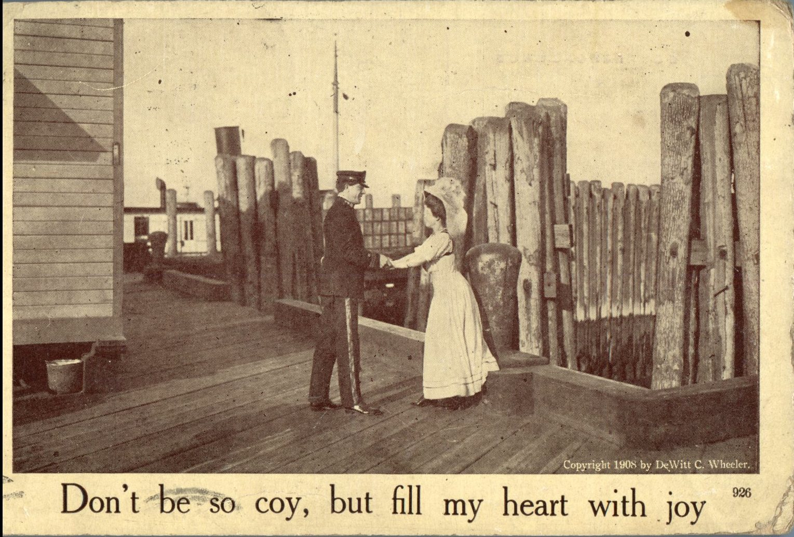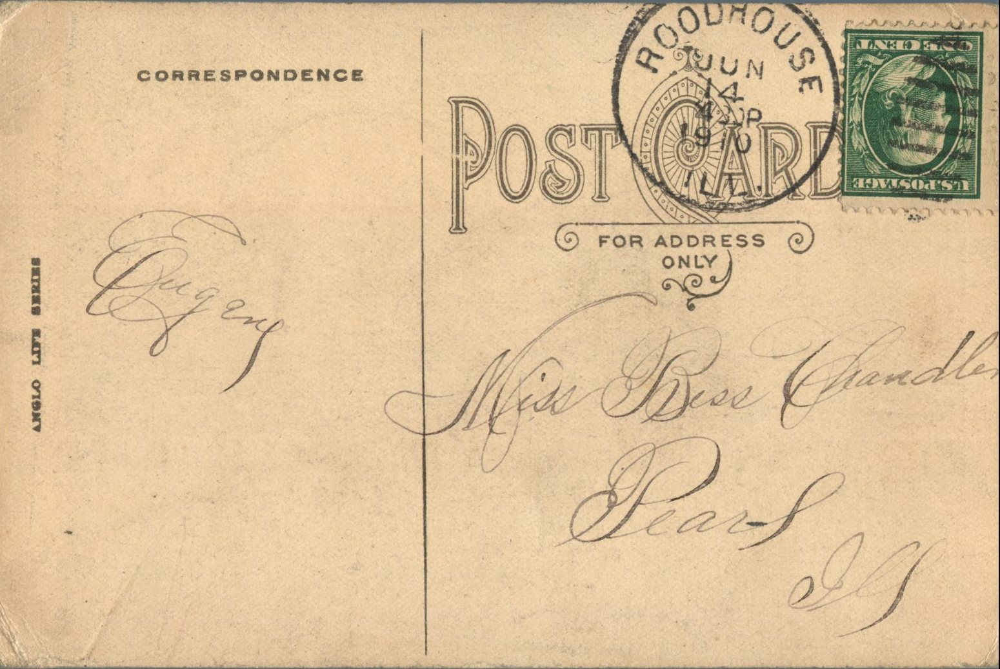From: Eugene, To: Bess Chandler
Mailed From: Roadhouse, Illinois on June 14, 1910
Miss Bess Chandler Pearl, Illinois
Eugene
From: Gladys, To: Bess Chandler
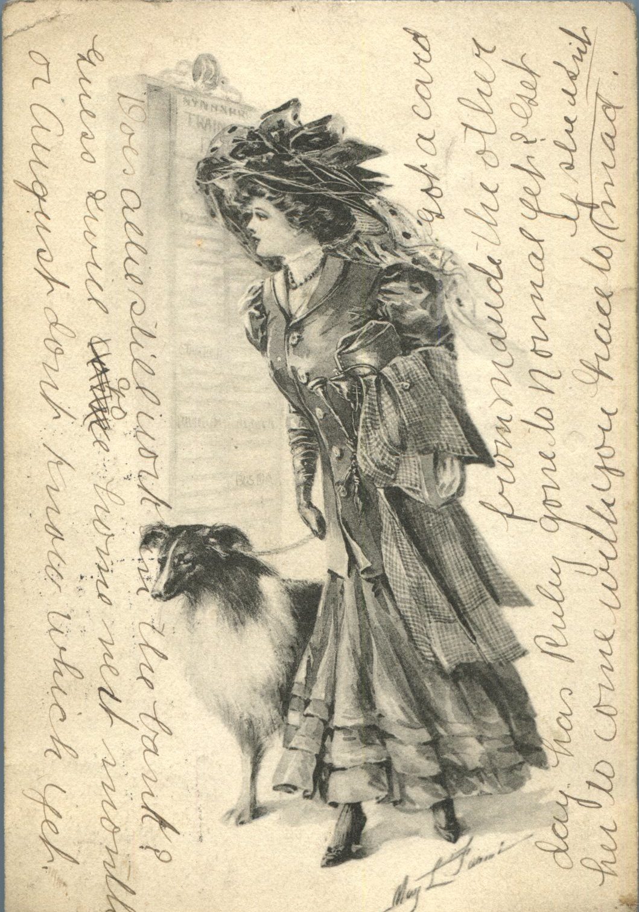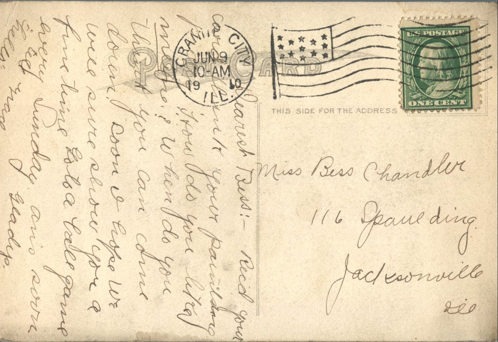From: Gladys, To: Bess Chandler
Mailed From: Granite City, Illinois on June 9, 1910
Miss Bess Chandler 116 Spaulding Jacksonville, Ill.
Dearest Bess, Received you card. Think your painting pretty. How did you like mine? When do you think you can come down? Soon I hope. We will sure show you a fine time, go to a ball game every Sunday. Ans. soon Gladys Tell Grace "hello."
Written on the Front: Does Allie still work in the bank? Guess will go home next month or August don't know which yet. Got a card from Maude the other day. Has Ruby gone to Normal yet? Get her to come with you, Grace too is she isn't mad.
From: Unknown, To: Ruby D. Chandler
{kind=link}
{kind=link}
From: Grace Chandler, To: Bess M. Chandler
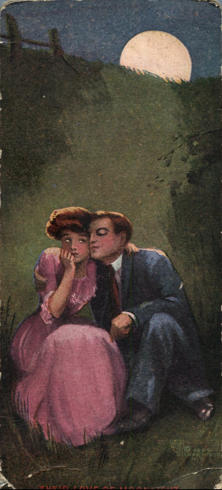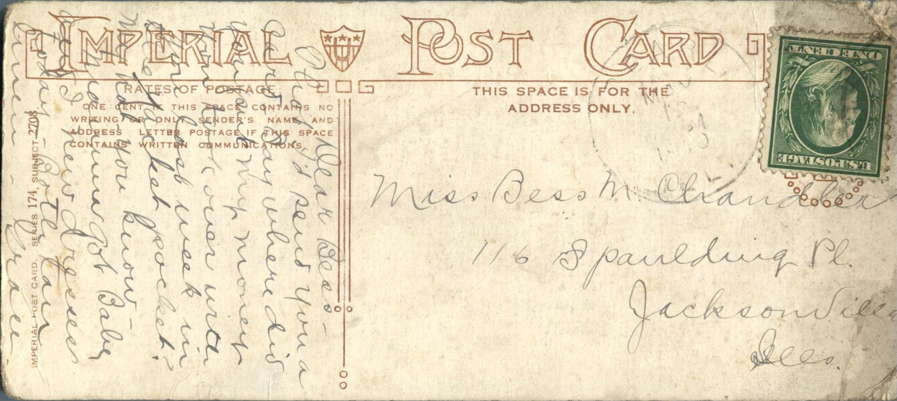
From: Grace Chandler, To: Bess M. Chandler Mailed From: Pearl, Illinois on May 10, 1910 Postcard Info: Imperial Post Card. Series 174, Subject 2708
Miss Bess M. Chandler 116 Spaulding Pl. Jacksonville, Illinois
Dear Bess, Thouhgt I'd send you a card to say where it is you put my money you took over with you last week in the jacket pocket? My hat you know - Mamma got Baby and I new dresses today - Both are tan linen. Grace
From: G., To: Ruby Chandler
{kind=link}
{kind=link}
From: G.A.M., To: Ruby Chandler
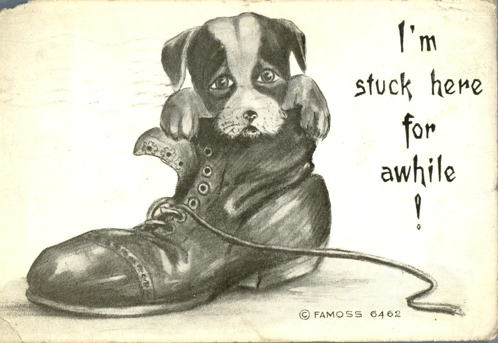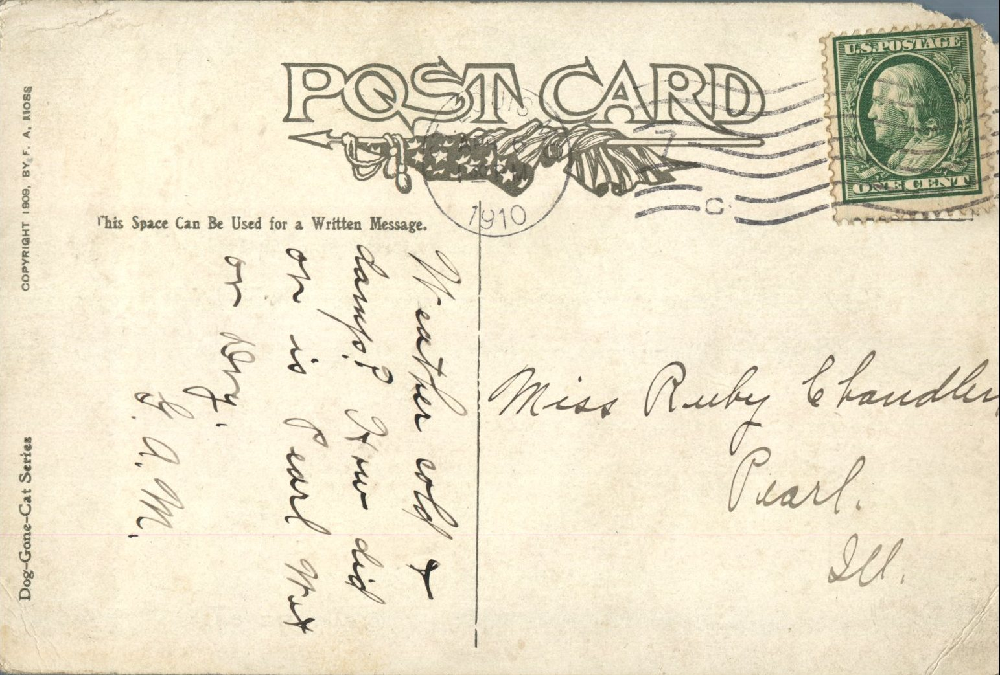From: G.A.M., To: Ruby Chandler
Mailed From: St. Louis, MO on April 6, 1910
Miss Ruby Chandler Pearl, Ill.
Weather cold and damp? How did or is Pearl? Wet or dry. G.A.M.
From: Grace Chandler, To: Ruby Chandler
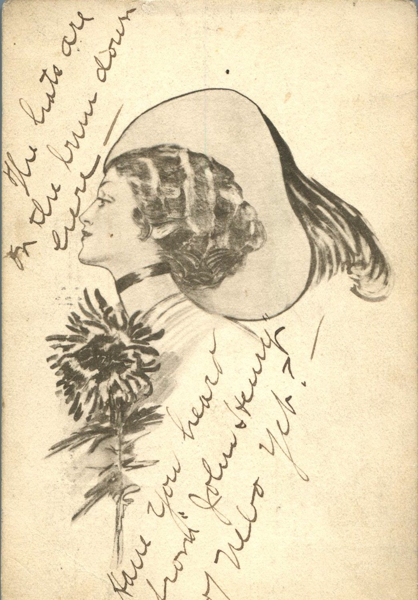From: Grace Chandler, To: Ruby Chandler
Mialed From: Granite City, Ill. on March 22, 1910
Miss R.D. Chandler Box 101 Pearl, Illinois
Dear, Very tired but will stick it out tomorrow again. Yours, Grace
From: Loyd, To: Ruby Chandler
{kind=link}
{kind=link}
From: G., To: Bess Chandler
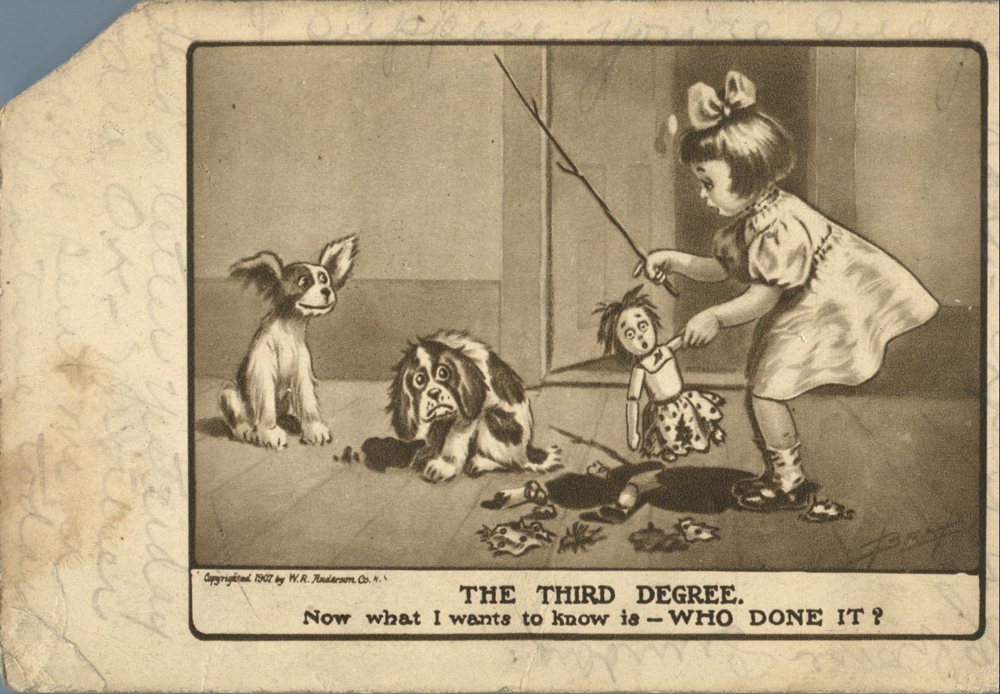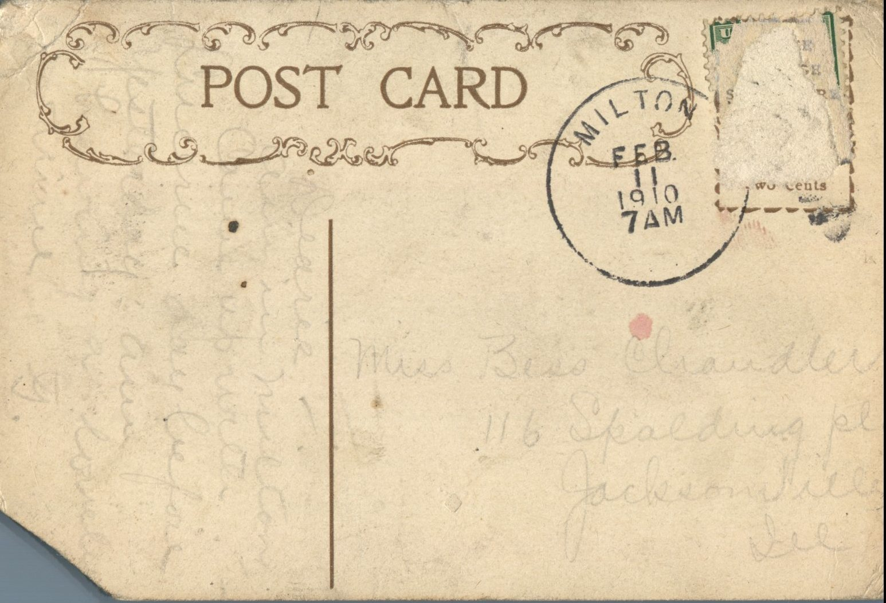From: G., To: Bess Chandler
Mailed From: Milton, Illinois on February 11, 1910
Picture Info: Copyrighted 1907 by W.R. Anderson. Co.
Miss Bess Chandler 116 Spalding Pl. Jacksonville, Ill.
Dearie, Am in Milton. Came up with Lucerne day before yesterday a.m. I write lovingly, G.
Written on the Front: Had a letter yesterday. All O.K. Write soon.